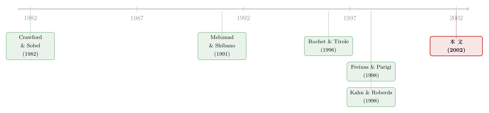

钱要不要轧差结算？——一道被两国监管者各自的小算盘搅乱的题
本文读的是 Holthausen & Rønde (2002, Review of Financial Studies)：当一笔跨境支付要在「实时全额结算」和「轧差净额结算」之间二选一，而两国监管者各自只看得见本国银行的风险时，谁来决定能不能走净额？作者把这道题写成一个博弈，结论是——监管者的激励天生就对不齐，公共监管做不到「第一优选」的准入；银行因为有限责任又太偏爱净额；但只要银行对交易对手知道得比监管者更多，让银行也参与准入，反而是好事，因为它把私有信息「漏」给了监管者。
1 一个每天搬运两万五千亿美元的「水管」
先讲一个不太被外人注意、却每天都在头顶运转的事实。
1999 年，仅美国的 CHIPS 和 Fedwire 两个大额支付系统，每天清算的金额合计就超过 2.5 万亿美元；Fedwire 上单笔支付的平均规模是 330 万美元。这些数字大到什么程度？大到支付系统本身，已经成了金融危机最可能借以扩散的那条管道之一。钱在这条管道里流得越快、越大，一旦哪个环节堵住，连带反应就越凶。
那么，这条「水管」该怎么设计？教科书给出两种基本型号。
第一种叫 实时全额结算 (real-time gross settlement, RTGS)：每一笔转账都即时、不可撤销地清算。它的好处是——你一旦收到一笔款，就可以确信它真的到账了，结算风险和系统性风险被压到最低。代价呢？银行必须时刻持有等于转账金额的中央银行准备金，这笔钱本来可以拿去投资生息，现在只能趴在账上。
第二种叫 净额结算 (net settlement)：白天的收付不立即清算，到约定的结算时点才把「净」的差额一次性轧平。只要没人违约，净额往往是零，于是银行几乎不用为结算预留准备金——这是它最大的诱惑。但风险也藏在这里：一旦某家银行到点结不出账，对手方等着收的那一大笔钱就收不到，麻烦会顺着净额结算的链条传染开去。
所以这是一道清清楚楚的权衡题：如果你担心银行会倒，就该用全额结算，因为它切断了传染；如果参与的银行足够安全、而且持有准备金的机会成本很高，那净额结算更划算。现实里两种系统也确实并存——欧盟有跨境 RTGS 的 TARGET，旁边并行着私营的净额系统 Euro-1；美国联储跑着全额的 Fedwire，私营的 CHIPS 则是净额结算。
到这里都还只是工程问题。真正让这篇论文有意思的，是下一步。
2 接着，一个自然的问题是：谁来决定「准不准走净额」？
把场景搬到国际上。两国的银行通过同一个支付系统互相转账。净额结算这条路不是想走就能走的——它需要准入审批。问题在于：审批权是分裂的。
通常会有一个「牵头监管者」(lead overseer) 负责整个结算系统的组织标准；但对参与银行本身的监管，却是按「母国原则」分散在各国手里的。一家外资银行在本地开的分行，盯着它的往往是它母国的监管当局，而不是东道国。
于是作者干脆把模型简化成：没有一个超国家的监管者，准入由两国的本地监管者共同决定——只有双方都同意，银行才能走净额结算，否则一律走全额。而每个监管者，只看得见本国银行的风险类型，看不见对方的。
这就埋下了全文的核心张力。理想情况下，要不要允许净额，取决于两家银行的风险；可信息分散在两个人手里，他们必须互相通报、互相依赖对方说的话。
一旦「说话」成了机制的一部分，一个更尖锐的问题就冒出来了：他们有没有动机说真话？
（关于「同一种货币、却因信息分散而变成不同市场」的银行间难题，可参见《同一种货币，未必是同一个市场》；而「两国监管者争夺同一块监管对象」的跨境冲突，则与《加一道资本要求，钱是流进来还是流出去？》遥相呼应。）
3 模型：把「传染」写进每一家银行的资产负债表
要回答上面的问题，得先把这条「水管」里的钱算清楚。论文用了一个 两期叠代 (overlapping generations, OLG) 模型，结构很干净，我们一步步搭。
经济的骨架。 两个国家，每国一家逐利的银行。两代储户：A 代在 0 期出生、B 代在 1 期出生，各自只活两期，手里各有一单位钱，都想给对方国家的人转一笔固定金额 t。银行在 0 期吸收 A 代存款，可投向两类资产：零息的中央银行准备金，和一项有正期望回报的、本国特有的风险技术。到 2 期，风险技术成功则回报 R，失败则归零；国家 i 的技术失败概率是随机变量 \(\tilde q_i\)，多数推导里假设它在 $[0,1]$ 上均匀分布，实现值记为 \(q_i\)，也就是这家银行的「类型」。
关键的传染装置：ASO。 这是全篇的机括，值得说慢一点。论文设定了一条破产规则：无论对手是否破产，银行都必须履行对另一家银行的结算义务；同时储户的求偿权优先于对手银行。于是会出现这样一幕——假设 A 国银行的风险技术失败了，它自己倒闭；可在净额结算下，没倒的那家 B 国银行，仍被规则要求向倒掉的 A 国银行转出 t，这笔钱再由 A 国银行用来偿还它自己的储户。
这笔「只有在一方违约时才真正需要支付、平时则与收款相互抵消」的转账，作者称为 附加结算义务 (additional settlement obligation, ASO)，大小等于 t。全额结算下因为即时清算，根本不存在 ASO。ASO 就是传染的数学化身：它把一家银行的失败，硬生生塞进了另一家银行的账本。
两套系统下的利润与福利。 在全额结算下，银行每期必须持有 t 的准备金。给定类型 \(q_i\)，银行 i 的期望利润（论文式 2）与本国期望福利（论文式 3）为：
$$\Pi^i_G(q_i) = (1-q_i)\big[(1-r-t)R - (1-t)\big]$$
$$W^i_G(q_i) = (1-t-r)\big[(1-q_i)R - 1\big]$$
这里 r 是补偿 A 代储户风险的利率。利润和福利并不相等——因为银行有 有限责任 (limited liability)，它不会把「银行倒闭时储户的损失」算进自己的账；而储户又观察不到银行类型和所选结算方式，没法把利率调到反映真实风险的水平。这道公私利益之间的楔子，后面会一再发力。
净额结算下，银行省下了 t 的准备金，但要背上 ASO 的风险。给定 \(q_i,q_j\)，银行 i 与银行 j 交易的期望利润（论文式 5）是：
$$\Pi^i_N(q_i,q_j) = (1-q_i)\big[(1-r)R - 1\big] - (1-q_i)\,q_j\, t\,\frac{R}{L}$$
看这第二项：外国银行的失败率 \(q_j\) 直接啃食本国银行的利润——因为外国一旦失败（概率 \(q_j\)），本国银行就得掏 ASO，为此被迫提前清算风险技术，而清算是有损失的（清算只能拿回 净额相对全额的福利增量。 把净额福利 \(W^i_N\) 减去全额福利 \(W^i_G\)，经过化简（论文式 7），得到全篇最该盯住的一个式子： 我顺手把这步化简也走一遍，因为它能让直觉落地。注意到
$$W^i_N - W^i_G = (1-r)\big[R(1-q_i)-1\big] - (1-t-r)\big[R(1-q_i)-1\big] - t\Big[(1-q_i)q_j\tfrac{R}{L} - q_i(1-q_j)\Big],$$
前两项的公因子是 \(A\equiv R(1-q_i)-1\)，系数相减恰好是 \((1-r)-(1-t-r)=t\)，于是前半截塌缩成 \(t\big[R(1-q_i)-1\big]\)；再把 \(-1+q_i=-(1-q_i)\) 并项，就得到上面那个干净的三段式。 直觉是什么？\(\Delta W^i=0\) 这条曲线把 \((q_i,q_j)\) 平面切成两半：曲线下方，本国愿意走净额；上方，本国愿意走全额。 而且这条无差异曲线是向下倾斜的——因为净额下投在风险技术里的钱更多，本国自身越危险（\(q_i\) 越大），净额相对全额掉得越快，要维持无差异，就只能要求外国银行更安全。一句话：外国银行越脏，本国越想要全额；外国银行越干净，本国越想要净额。 这完全符合第 1 节那道权衡题的直觉。 到这里，反转开始酝酿。 如果监管者能同时看见两家银行的类型（论文先用这个「对称信息」基准热身），把两条曲线 \(\Delta W^1=0\) 和 \(\Delta W^2=0\) 画在同一张 \((q_1,q_2)\) 图上，平面被分成四块：在区域 A，两国都想要净额；在区域 D，两国都想要全额；但在区域 B 和 C，两国吵起来了——风险更低的那家银行所在的国家想要全额，另一个国家却想要净额。 为什么是「低风险国」更抗拒净额？因为在净额结算里，安全的银行更可能是 ASO 的「支付方」，而不是「接收方」——它大概率活着，于是大概率要替倒掉的对手垫付 这就引出了那条贯穿全文的激励暗线：监管者有动机「低报」本国银行的风险。 因为在净额结算下，本国失败的成本有一部分（通过 ASO）由外国经济埋单——这等于是国家层面的「有限责任」。我把本国说得安全一点，对方就更可能同意走净额，而走了净额，我这边的风险才好往外摊。 银行那边呢？ 同样因为有限责任，银行在算自己的利润时不把储户损失算进去，于是银行偏爱净额结算的频率，系统性地高于社会最优。监管者低报、银行偏好叠加，结论顺理成章： 公共监管无法实现「第一优选」的准入标准。 监管权的国际分割，让每个监管者都带着「把风险往外摊」的小算盘；福利最大化的准入规则，因此落不了地。 读到这儿你大概会想：既然激励对不齐，那干脆别让他们商量，直接拍一个固定规则——要么一律净额、要么一律全额——不就清净了？ 论文的回答是：不。 即便存在上述激励问题，监管者之间的沟通仍然让准入规则更有效率。 作者把沟通建模成一场没有货币转移的对话：在银行类型实现之前，两国先商定一个对称的准入方案 \(\phi^k(\cdot)\)——它把「本国类型」映射到「允许走净额所需的外国银行最高风险」。因为两国事前完全对称，这个方案的谈判没有利益冲突，双方会一致选出期望福利最大的那个 \(\phi^k\)。类型实现后，银行申请走净额，监管者再互相通报本国类型；通报落进预定方案允许的区间，就放行。 正是在这一步，论文接上了 沟通博弈 (cheap talk) 的经典脉络。监管者的「说话」不带承诺、不带转移支付，本质上是一场 Crawford & Sobel (1982) 式的策略性信息传递——说话者有偏向（想低报风险），但只要偏向不至于把信息全毁掉，部分信息仍能传过去。Melumad & Shibano (1991) 把这套「无转移情形下的沟通」推得更细，作者正是在他们的肩上建模。 结果是漂亮的： 基于沟通的准入规则，福利严格高于「永远净额」或「永远全额」这两种固定规则。 哪怕监管者有低报的小心思，让他们带着各自的私有信息坐下来谈，也好过一刀切。于是第一条政策结论是：监管者应当始终参与准入。 如果故事到此为止，它只是一篇「证明沟通有用」的论文。真正把它顶到 RFS 的，是最后那个反直觉的设定。 到目前为止我们都假设监管者和银行掌握同样的信息。但作者追问：现实里，一家在国际上做业务的银行，对它外国交易对手的底细，难道不比本地监管者更清楚吗？ 这太合理了——监管者守着国界，银行却天天和对手打交道。 于是论文换上第二个情形：银行能完美观察到彼此的类型，而监管者只看得见本国银行。 此时银行手里攥着监管者没有的信息。直觉上，让一群「偏爱净额、又有信息优势」的银行参与准入，似乎是引狼入室。 但反转恰在此处： 如果银行拥有关于对方风险的优势信息，那么让银行也积极参与准入，就变得至关重要——因为银行的申请行为本身，会把宝贵的私有信息「泄露」给监管者。 机制是这样的：银行偏爱净额没错，可它对外国对手的风险一清二楚，当对手真的很危险时，连它自己都不愿意走净额（ASO 的成本会吃掉利润）。于是银行「申请走净额」这个动作，本身就传递了「我判断对手足够安全」的信号。监管者把这条来自市场的信号，叠加到自己分散的监管信息上，准入决策就更接近真相。私人参与的价值，不在于私人更公正，而在于私人知道得更多、并在行动里不打自招。 这才是全文真正要钉死的那一个核心：在一个监管权被国界切碎、信息天然分散的世界里，最优的支付系统准入，既离不开公共监管者的协调，也离不开把市场参与者的私有信息「调动」进来。 把这篇论文放回它生长的土壤，能看得更清楚。 最早，大额支付系统的理论文献，几乎都围着「净额 vs 全额」这道权衡打转。Rochet & Tirole (1996) 讨论了两类系统并存时如何控制风险；Freixas & Parigi (1998) 把「净额下的传染风险」与「全额下更高的流动性需求」摆上天平，正面分析了这道权衡；Kahn & Roberds (1998) 则指出，在净额系统里，参与者本身就有对未结清支付违约的动机——这正是本文 ASO 与有限责任那条暗线的近亲。  另一支文献关心的是「银行监管权在国际间如何分割」。但据作者所知，在本文之前，还没有人对国际支付系统的准入监管做过正式的博弈分析。 本文的新意有二：一是把监管权的国别分割显式地写进模型，二是把监管者之间的沟通内生化——而沟通这一块，它接的是 Crawford & Sobel (1982) 与 Melumad & Shibano (1991) 这条无转移信息传递的脉络。于是这篇论文恰好站在「支付系统设计」与「策略性沟通」两条河流的交汇处。 （顺带一提，关于支付与记账的现代形态——区块链如何重塑「钱」的治理——可参见《谁来给账本盖章？》；而「规则还是相机抉择」这一监管承诺问题，则见《规则还是相机抉择？》。） Q：ASO 这个设定是不是太人为了？现实里轧差结算真会要求「活着的银行替倒掉的银行垫钱」吗？ 这是模型的命门，作者也老实承认它依赖破产规则的设定。论文采的是「全额义务」规则：银行对另一家的结算义务不因对手破产而免除。脚注里作者点明，另一种现实做法是「更新式轧差」(netting by novation)，银行只对净额负责——那样的话，要产生传染就还得额外假设支付流不平衡、失败方存在净负债。换句话说，ASO 不是凭空捏造，而是对应了一种真实存在的法律安排；但结论确实对「用哪条破产规则」敏感。 Q：监管者「低报本国风险」，可对方监管者难道不会预期到、从而打个折扣吗？这不就是 cheap talk 的老问题？ 正是。这就是为什么作者要借 Crawford-Sobel 的框架——在均衡里，听者完全预期到说者的偏向，沟通因此只能是「部分信息传递」，而非完全揭示。论文的贡献不在于假装监管者会说真话，而在于证明：即便打了折扣的、不完全的沟通，其福利也严格高于「干脆不沟通、上固定规则」。低报被预期到，但信息没有被完全摧毁。 Q：既然监管者激励有问题，为什么不引入一个超国家监管者一锤定音？ 作者刻意把超国家监管者抽掉了，理由是现实约束：各国监管当局是主权的，不直接服从某个国际权威。论文甚至区分了两种基准——能用国家间「货币转移」来激励说真话的「受约束第一优选」，和不能用转移、只能商定准入方案的「本地监管」全模型。前者是理论标尺，后者才是它认为贴合现实的情形。这也提醒读者：本文的「失败」是相对于第一优选而言的，不是说沟通毫无价值。 Q：「让银行参与反而好」会不会被有限责任反噬？银行明明偏爱净额。 关键区分在于：银行偏好净额（有限责任导致），但银行也掌握对手的真实风险。这两件事方向相反却能并存。当对手风险高到连银行自己都不愿走净额时，它的申请就成了可信信号——因为此时它的私利和社会利益恰好同向（都不想要净额）。所以价值来自「信息」，不来自「偏好」；偏好是噪声，信息是金子。 Q：模型假设储户观察不到结算方式和银行类型，这个假设撑起了多少结论？ 撑起了「公私利益之间的楔子」。如果储户能看见类型和结算方式，他们会要求反映真实风险的利率，银行就被迫内部化储户损失，福利与利润对齐，有限责任的扭曲消失。作者也说明，正是「储户看不见」让模型能闭式求解。所以这是个为可解性服务、但方向上无害的假设——放松它只会削弱、而非制造扭曲。 Q：这篇 2002 年的论文，对今天还有什么用？ 它的内核——「监管权按国界分割 + 信息分散 + 参与者私有信息」——在今天的跨境支付、稳定币、央行数字货币互联里只会更突出。每当出现一个新的跨境结算基础设施，「谁来批准谁能接入、各国监管者如何共享对参与机构的判断」这道题就会重演一遍。模型的具体设定会过时，但这个三角张力不会。 1）把「沟通」换成「数据共享平台」：监管科技下的准入。 【经济故事】本文的沟通是 cheap talk——无承诺、无核验。但现实里监管者之间正在建可核验的数据共享设施（如交易层面的报告）。如果通报变得「可验证」，低报的空间被压缩，准入会更接近第一优选吗？还是说核验成本会带来新的扭曲？
【可行性】中。理论上可在本文框架里把「可核验信号」加进沟通阶段对比福利；实证上较难，因为跨境监管数据共享的微观记录极少公开。偏理论可做，纯实证 doable 性低。 2）从支付系统迁移到公司债的跨境清算与 CCP 准入。 【经济故事】中央对手方 (CCP) 给谁开放清算会员资格、保证金怎么定，本质上和本文「准入 + 传染」是同构的——会员违约会通过违约基金传染给其他会员，这正是 ASO 的放大版。安全会员是否也「替别人扛传染」、因而抗拒扩大准入？
【可行性】中高。CCP 会员名单、保证金参数、违约基金分摊规则有相当一部分是披露的；可用准入规则变更做事件研究，看会员风险构成的变化。识别上要处理 CCP 自选会员的内生性。 3）外资银行分行的「母国监管」如何影响其在东道国支付系统中的行为。 【经济故事】本文核心假设是「外资分行由母国监管」。这能否在数据里看见？母国监管越宽松的外资银行，是否更频繁地申请走净额/低准备金通道、在压力期更易成为传染源？这是把模型的「监管者低报」翻译成可观测行为。
【可行性】中。需要把支付系统参与者按母国监管强度分组（可用巴塞尔合规、母国监管评级代理），匹配其在东道国 RTGS/净额系统的使用强度。数据获取是主要门槛，但部分央行的支付系统统计可申请。 4）净额 vs 全额的选择，与持有准备金的机会成本（即政策利率）挂钩。 【经济故事】本文权衡的一端是「准备金机会成本」。当利率长期处于零下限、准备金几乎不付出机会成本时，净额结算的吸引力是否系统性下降、银行与监管者的偏好是否随之收敛？这把一个静态权衡接到了货币政策周期上。
【可行性】高（偏理论）。在本文模型里把 5）流动性危机期的准入收紧：传染的「内生准入」版本。 【经济故事】本文准入规则是事前商定的。但危机中监管者会临时收紧准入。如果把准入做成依状态变化的相机决策，会不会出现「越收紧越恐慌、越恐慌越收紧」的自我实现螺旋？这与公司债在 COVID 期的流动性骤停有相通之处。
【可行性】中。理论上可把本文嵌入一个带状态变量的动态框架；实证上可借鉴危机期支付系统排队数据（很多央行记录了日内排队与延迟）。doable 但数据密集。L，\(04 但真正关键的一步在于：两国的「想要」并不一致
t；而它自己倒下、需要别人垫付的概率很小。它替别人扛了传染，却分不到净额省准备金的足够好处。于是安全银行的监管者天然反对净额，危险银行的监管者反倒乐见净额——后者算盘打得很清楚：我这家银行风险高，真出事时一部分损失能甩给外国经济去承担。5 然后，反转出现：吵归吵，「说话」依然有用
6 最后落点：当银行比监管者更懂交易对手
7 文献脉络
8 评论与延伸（Q&A + 研究方向）
(a) 几个可能的疑问
(b) 几个可能的研究问题与提案
r/准备金成本参数化为利率的函数，做比较静态即可；若要实证，可看不同利率环境下 RTGS 与净额系统的相对交易量份额。
参考文献